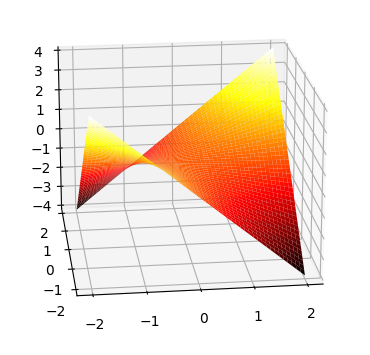
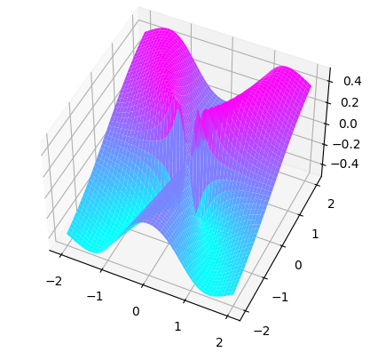

Plotting 2D surfaces in python
Here's a straightforward approach to plotting 2D surfaces in python:
import numpy as np
import matplotlib.pyplot as plt
# Define the function to plot.
def f(x, y):
return x * y
# Define the domain.
x = np.linspace(-2, 2, 50)
y = np.linspace(-2, 2, 50)
X, Y = np.meshgrid(x, y)
# Evaluate the function at each point in the domain.
Z = f(X, Y)
fig = plt.figure()
ax = fig.add_subplot(111, projection="3d")
surf = ax.plot_surface(X, Y, Z, cmap="hot")
plt.show()
Notes
For piecewise functions like
the straightforward transliteration into python doesn't work:
def f(x, y):
if x == 0 or y == 0:
return 0
else:
return (x**2 * y) / (x**4 + y**2)instead inciting the error:
ValueError: The truth value of an array with more than one element
is ambiguous. Use a.any() or a.all()This refers to the fact that x and y in f are not scalars but numpy
arrays.
Because of this, x == 0 doesn't make sense.
We have at least two options here:
“Vectorize” the function:
F = np.vectorize(f)Rewrite it (if possible) using
np.where:def f(x, y): return np.where((x == 0) | (y == 0), 0, (x**2 * y) / (x**4 + y**2))
The result is the same:
